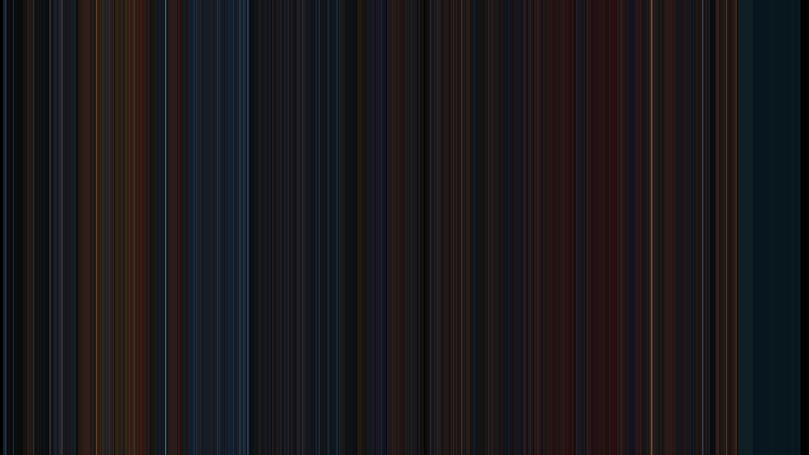

Movie Barcode Generator
This python script takes every frame from a movie file and condenses them all down to a single pixel’s worth of color. Laid out in a single resultant image, the results take on a abstract form that speaks of the tone and mood of the movie it depicts.
For example, here's The Polar Express (2004) compressed into one barcode.
This script employs k-means clustering on each frame sampled to find the dominant color in each image, thus creating a simplier, more abstract appearing barcode than with other generators seen on the internet.
Click here to see the code for this project